1952—How to Make Hats
by Ruby Carnahan
Ribbon Bows
WIRING RIBBON FOR BOWS
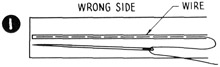Ribbon wire is used to wire ribbon, is available in black or white. Use black for dark ribbons and white for light ribbons. For some bows the ribbon wire is sewn in the center of the ribbon, on the wrong side (Illus. 1). Use thread in same color as ribbon to sew wire.
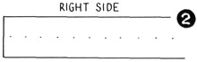Take a stitch through wire and ribbon on the wrong side of ribbon and a long stitch on underneath side of ribbon, through ribbon wire (Illus. 2).
Ribbon is also wired on the edge of ribbon (Illus. 3), stitching ribbon wire down one side of ribbon and turning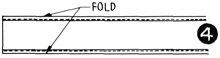 ribbon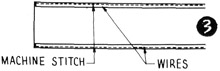 over once to cover the wire (Illus. 4).
WIRING TAFFETA BOWS
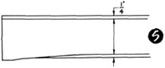Cut (taffeta bought by the yard) into strips as wide as you want bows to be, allowing 1/2" on each side for hemming. Turn taffeta edge over 1/4" (Illus. 5)
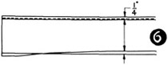then turn over again 1/4" (Illus. 6) and stitch on machine. Do this to each side of taffeta strips.
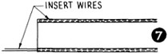Run a fine piece of lace wire through these grooves (Illus. 7) then make bows.
LOOP BOWS
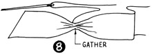Divide amount of ribbon you are using in half and start with one end, gather together and sew (Illus. 8).
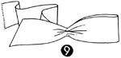(Illus. 9) Loop ribbon under keeping end on top.
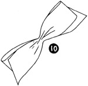(Illus. 10) Loop next loop under again and let this end come from underneath.
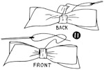(Illus. 11) Cut a small piece of ribbon and crush through and over center to back of bow and sew.
BUTTERFLY BOW
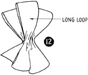Make three loops on each side making one loop on one side longer (Illus. 12).
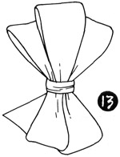After bow is completed and a soft piece of ribbon crushed in center of bow and sewn on back side of bow (llus. 13).
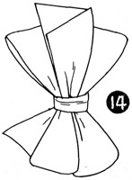Cut the center long loop open on the bias (Illus. 14).
TAILORED BOW
Divide and mark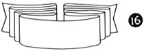 ribbon 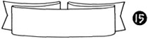for each loop and end, lay flat and sew having one on each side, like illustration 15 or several like Illustration 16. If you are having several loops on each side graduate loops having first loop longest. However measure each loop on each side of bow and mark before starting.
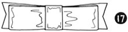Finish center of bow with a small piece of folded ribbon sewn on back side of bow (Illus. 17).